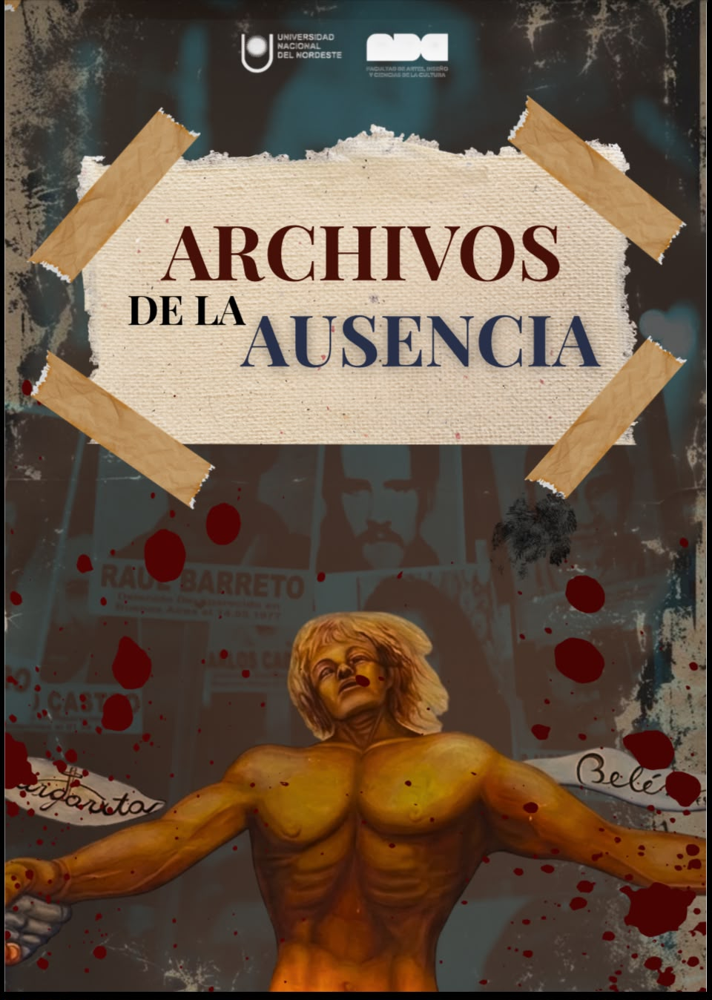

07
Galería de Archivos y Fotografías
Hacé clic en cualquier imagen para verla en pantalla completa.

.jpeg)
.jpeg)

.jpeg)

.jpeg)

Un proyecto realizado por estudiantes de la FADyCC para conocer el pasado, comprender el presente y pensar el futuro.

Archivos de la Ausencia es un proyecto realizado por estudiantes de la FADyCC que busca acercar a las nuevas generaciones a la historia de la Última Dictadura Cívico-Militar Argentina, a 50 años del golpe de Estado de 1976.
Desde nuestra mirada como estudiantes y jóvenes, nos proponemos conocer, investigar y reflexionar sobre la memoria, recuperando historias, voces y huellas de nuestro pasado.
A través de fotografías, testimonios, archivos audiovisuales y arte, buscamos generar un espacio que no solo informe, sino que también invite a hacer preguntas y a construir nuevas formas de acercarnos a nuestra historia.
"Porque recordar también es una forma de participar en el presente.
Archivos de la Ausencia es nuestra manera de acercarnos a la memoria para conocer el pasado, comprender el presente y pensar el futuro."
Desde el año 2006, cada 24 de marzo se conmemora oficialmente en nuestro país el Día Nacional de la Memoria por la Verdad y la Justicia con el objetivo de:
El 24 de marzo de 1976 las Fuerzas Armadas argentinas encabezaron un golpe de Estado contra el gobierno constitucional de María Estela Martínez de Perón, quien había asumido la primera magistratura el 1 de julio de 1974, luego del fallecimiento del presidente Juan Domingo Perón.
Faltaban apenas algunos meses para la realización de elecciones libres, que habían sido adelantadas para octubre de 1976. El gobierno fue asumido por una Junta Militar integrada por los jefes de las tres armas: Ejército, Armada y Aeronáutica, y las fuerzas de seguridad quedaron subordinadas a su conducción.
Entre 1976-1983 miles de personas fueron secuestradas en centros de detención ilegal, asesinadas, desaparecidas, torturadas, encarceladas, o debieron sufrir el exilio, mientras que cientos de bebés fueron sustraídos a sus familias biológicas y entregados a otras, por lo general de represores, luego de sustituirse su identidad. Todos estos delitos fueron planificados y ejecutados de manera masiva y sistemática por las Fuerzas Armadas, quienes contaron con el apoyo de responsables civiles.
El terrorismo de Estado se caracterizó por la implementación de un dispositivo represivo clandestino, basado fundamentalmente en la existencia de campos de concentración y en el exterminio de personas detenidas bajo la modalidad de la desaparición forzada. Hasta el momento, se han logrado identificar 800 lugares que funcionaron como centros clandestinos de detención y exterminio en todo el país.
Siete años que transformaron nuestra historia. Conocer lo que ocurrió nos permite comprender el pasado, reflexionar sobre el presente y pensar qué sociedad queremos construir hacia el futuro.
Testimonios de los familiares y acervo documental que sostiene nuestra memoria colectiva.
Símbolo inalcanzable de lucha, búsqueda incesante de la verdad y recuperación de la identidad de cientos de nietos.
Registros históricos del pueblo en las calles exigiendo Justicia y el fin de la impunidad.
La gráfica popular y de resistencia como manifestación visual de reclamo y memoria activa.
Sitios donde funcionaron centros clandestinos, señalizados y transformados en lugares de pedagogía y recuerdo.
Los rostros de la memoria que continúan presentes exigiendo respuesta, verdad y justicia.
Hacé clic en cualquier imagen para verla en pantalla completa.
El arte puede convertirse en una forma de recordar, transmitir y generar preguntas sobre el pasado. A través de una imagen, una película, una canción, una obra o una fotografía, los hechos históricos pueden llegar a nuevas generaciones desde una experiencia diferente.
El arte no cambia lo que ocurrió, pero puede cambiar la manera en que lo recordamos, lo comprendemos y lo transmitimos.
Cincuenta años después del golpe de Estado, las nuevas generaciones tenemos la posibilidad y la responsabilidad de seguir construyendo memoria. Escuchar testimonios, conocer nuestra historia, preservar archivos, crear desde el arte y hacer nuevas preguntas también son formas de recordar.
La memoria nos permite mirar hacia atrás para comprender el presente y pensar el futuro. Y la democracia nos invita a participar, expresarnos, escuchar otras voces y defender los derechos que forman parte de nuestra vida cotidiana.
Porque la memoria no termina en un archivo. Continúa en cada persona que decide conocer, preguntar y recordar.
Pensar la democracia es, también, construir memoria, educar en el respeto y la valoración de las diversidades, reclamar y conquistar derechos, luchar por la equidad y comprender la democracia como una experiencia que se despliega en la escuela, en la familia, en el mundo laboral y en todos los ámbitos de nuestra vida cotidiana en sociedad.
Elegí las palabras que para vos representan la democracia:
1. ¿En qué año comenzó la Dictadura Cívico-Militar Argentina?
2. ¿Hasta qué año se extendió la Última Dictadura?
3. ¿Por qué es importante conservar testimonios, fotografías y documentos?
4. ¿Qué lugar ocupa el arte en la construcción de la memoria?